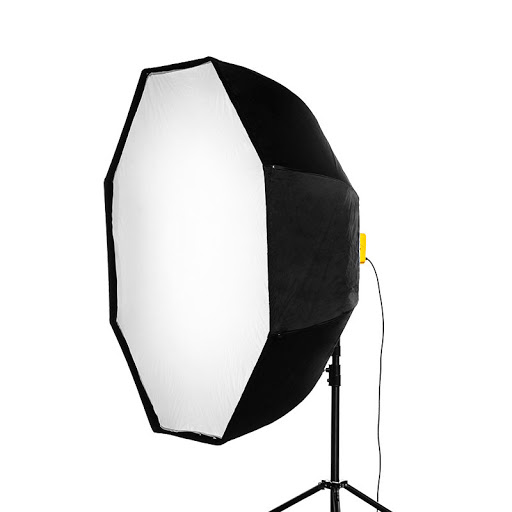

Basic Gears in Photography
Lighting Gears
Lighting is a key factor in creating a successful image. Lighting determines not only brightness and darkness, but also tone, mood, and atmosphere.

Lighting
The source your light is coming from has a huge impact on how it falls on your subject. Light originating from behind the camera, and pointing directly onwards, gives very flat lighting. It will also cause shadows to fall in the background of the image.
Type of Lighting Accessories
Softbox
Softbox is the most widespread lighting modifier of square and rectangular forms. Basically, it’s a frame made of tubes covered with a special material. The front of a softbox is covered with the cloth that diffuses the light to make it soft.

Oktobox
Oktobox is a circular octagonal modifier. Very similar to a softbox. Produces diffused soft light. It is often used by fashion photographers for its uniform illumination across the entire scene and very slight shadows.
Stripbox
Stripbox is a soft directed source of light. Resembles design of a softbox, but with more stretched proportions (30–40 cm wide). It is commonly used for the production of full body portraits.
Umbrella Lights
Umbrellas are accessories used for soft light distribution. Very slight shadows. Umbrellas come in two types: the reflected umbrella and the optical white shoot-through umbrella.Shoot-through umbrellas have small reflectivity due to the semi-transparency of the fabric and are used to reduce the intensiveness of a strobe light, creating a nice fill light.